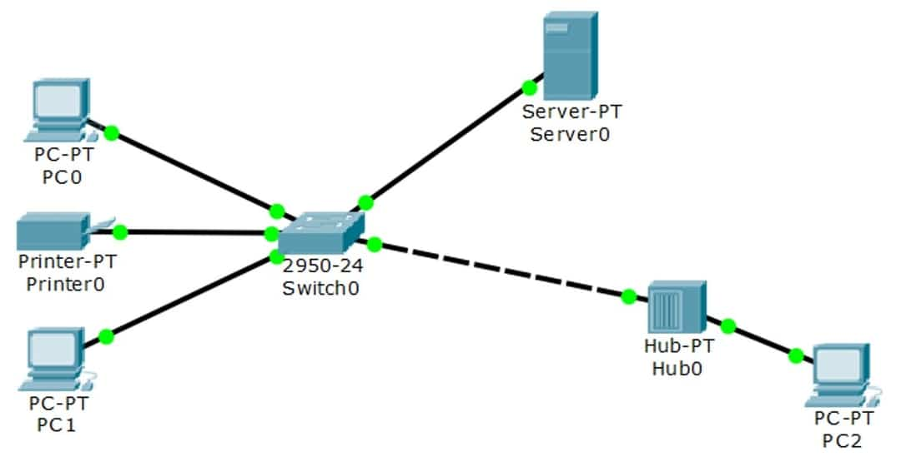

Redes de Computadores
Introdução à comunicação de dados e teleprocessamento
Sinais analógicos e digitais
Os tipos de sinais utilizados na comunicação podem ser divididos em dois: analógicos e digitais. Em redes de computadores esses dois sinais também estão presentes nos tipos de transmissão e determinam a qualidade do serviço.
Sinal Analógico
Segundo Tanenbaum (2003), os sinais analógicos são ondas eletromagnéticas que assumem infinitos valores ao longo do tempo. Esse sinal é representado por uma onda senoidal com as seguintes características:
-
Amplitude: representa intensidade mais alta dos sinais elétricos (volts).
-
Frequência: é medida em hertz, define a quantidade de ciclos em um intervalo de tempo.
-
Fase: define o formato da onda senoidal, pode ser medida em graus ou radianos.
Para uma melhor compreensão do sinal analógico, observe o sinal produzido pela voz humana na figura a seguir:
Sinal Digital
Em contrapartida, o sinal digital é representado por 0s e 1s, ou seja, é um sinal binário. A representação dos seus valores é dada como discreta ao longo do tempo e amplitude. Então, é possível diminuir a taxa de oscilação, fenômeno este responsável pelo aumento da qualidade de serviço. Quando ocorre uma transmissão de dados, ocorre um processo de codificação (digitalização) desse sinal. Com isso, os sinais digitais:
-
 Não sofrem degradação dos serviços por interferência ou ruídos.
Não sofrem degradação dos serviços por interferência ou ruídos.
-
Pode ser transmitida maior quantidade de informações.
Observe a figura a seguir com as características do sinal digital:

Os modos de transmissão dos sinais nas redes de comunicação de dados podem variar conforme o sentido em que ocorrem as trocas de mensagens, o número de bits enviados simultaneamente e a sincronização entre computador e servidor.
Componentes de uma rede
Para estruturar as redes, existem alguns componentes de hardware que são essenciais para prover a comunicação entre os dispositivos: Placas de rede, Modem e Hub
Placas de rede
O controlador de interface da rede (NIC – Network Interface Controller) pode estar ou não integrado à placa-mãe.
A arquitetura de seu barramento pode ser na forma PCI, PCI Express, ISA e USB, ou seja, o formato de encaixe na placa-mãe. A sua função lógica é efetuar o tratamento de endereçamentos no envio e recebimento das mensagens.
Modem
O modem tem a função de fazer a modulação e demodulação das mensagens, e também é conhecido como transceptor.
Em sua forma analógica, os dados são transmitidos pelo canal de voz; já na sua forma digital, é feita a codificação da banda base. Esse equipamento está entre os mais populares dos hardwares encontrados nas redes.
Hub
O hub pode conter várias linhas de entrada que são responsáveis por distribuir conexão. Esse equipamento assume o papel de um repetidor, pois a mensagem ao chegar é replicada para todas as portas.
Por ter o comportamento de repetidor dentro de uma rede e pelo motivo de replicar uma mensagem para todos os dispositivos conectados a ele, deve-se evitar o cascateamento.
Em uma rede privada os recursos e sistemas compartilhados ficam restritos à organização e podem estar estruturados de duas formas. Veja:
Intranet: Compreende uma rede privada que utiliza em sua estrutura física e lógica o modelo de internet. No entanto, os serviços de rede, como servidores de arquivos e impressão, servidor web e as aplicações são de uso interno.
Extranet: Conhecida popularmente como internet. A diferença é que os recursos só podem ser acessados com autorização de um administrador da rede de uma companhia.
Topologias de redes: Roteador, Switch, Bridges (Pontes) e Gateway
As redes utilizadas diariamente possuem em suas infraestruturas alguns equipamentos essenciais para prover a comunicação entre os dispositivos, independentemente da sua localização geográfica. Tais equipamentos e as suas respectivas configurações são imperceptíveis para o usuário final, porém o desempenho dos seus serviços pode ser sentido (positivamente ou negativamente).
Roteador
O roteador forma tabelas lógicas dos equipamentos disponíveis nas redes, como: roteador, switch, computadores, dispositivos móveis, impressoras IP e câmeras IP. Para auxiliar nesse processo é utilizado um mecanismo de descoberta de dispositivos “vizinhos”, que é efetuado por roteadores e switches por meio dos protocolos de comunicação:
-
ICMP
Esse protocolo faz o diagnóstico da rede, bem como relata os erros de recebimento de pacotes e no informe de características da rede.
-
ARP
Efetua o mapeamento dos endereços físicos (MAC) por meio do endereço lógico.
-
RARP
Faz o inverso do ARP, associando um endereço lógico ao físico.
Dessa forma, um roteador envia periodicamente um protocolo de atualização de vizinhança aos roteadores conhecidos, e um vai enviando a atualização aos outros sucessivamente, fazendo com que a tabela lógica de endereçamento dos equipamentos continue sempre atualizada.
Segundo Kurose (2006), o roteador (sem fio) recebe a mensagem pela porta de entrada, repassa o pacote para o processador que efetua o roteamento, no qual ocorre a análise do endereçamento destino, e encaminha para a porta de saída, apontando a interface de rede (placa ethernet).
Switch
Esse tipo de equipamento é comumente encontrado em empresas, faculdades, ou seja, redes que necessitam maior número de dispositivos. Quando a mensagem chega a uma das interfaces de rede, o sistema do equipamento lê o endereço destino do cabeçalho e envia para a interface apropriada.
Bridges (Pontes)
Quando o administrador de redes necessita conectar duas redes distintas, uma solução viável pode ser utilizada – as Bridges(pontes). Esse tipo de equipamento possui características muito parecidas com o switch.
Enquanto o switch é utilizado para conectar dispositivos da rede, a Bridge é utilizada para interligar duas redes (LAN). Mas nada impede que o administrador utilize o switch para interligar duas redes, desde que devidamente configurado e planejado.
A vantagem em se utilizar as bridges é que a sua configuração é mais simples, necessitando apenas apontar o endereço das interfaces dos equipamentos das redes que estão sendo conectadas. Já ao se utilizar o switch, o ganho no processamento das informações pode proporcionar um ganho de desempenho na comunicação entre os dispositivos de redes distintas.
Gateway
Este conceito está diretamente ligado a um termo muito utilizado por profissionais de redes de computadores, que é “borda de rede”. O gateway pode ter funções específicas nas redes, dependendo do planejamento do administrador de redes. Entre elas, podemos destacar:
-
Direcionamento
No qual todas as mensagens são enviadas para o nodo da rede, podendo ser roteador ou switch.
-
Proxy
Uma lista de sites cujo acesso é ou não permitido por meio dos dispositivos da rede interna.
-
Firewall
Um dispositivo de segurança que verifica o conteúdo dos pacotes e efetua seu bloqueio, quando nocivo aos serviços disponíveis na rede.